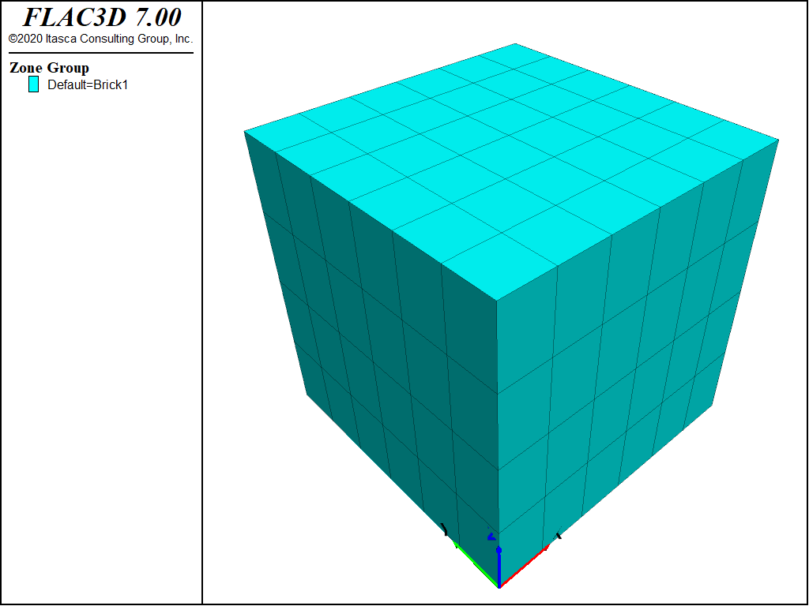
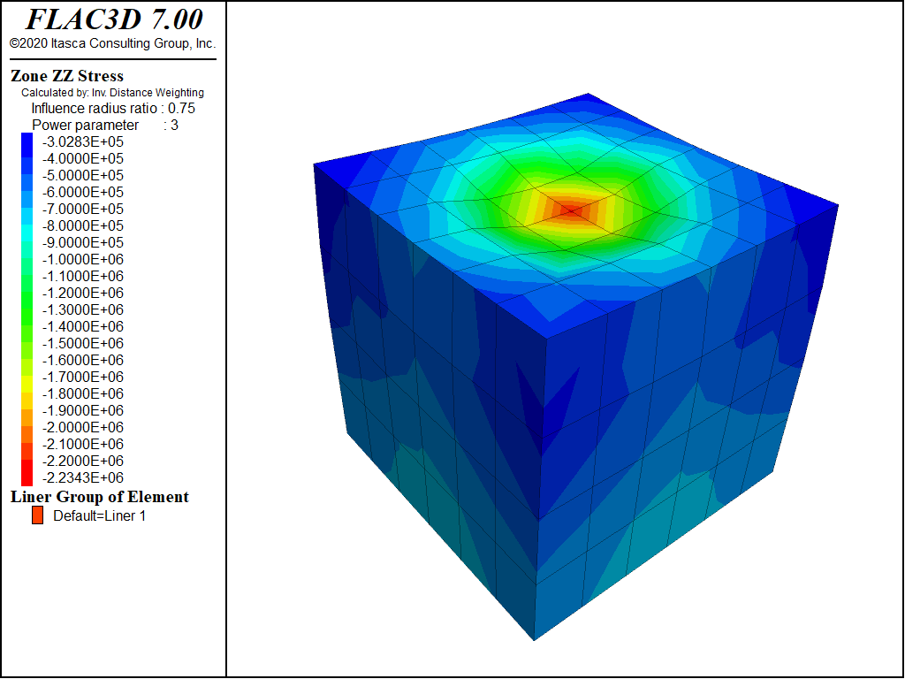
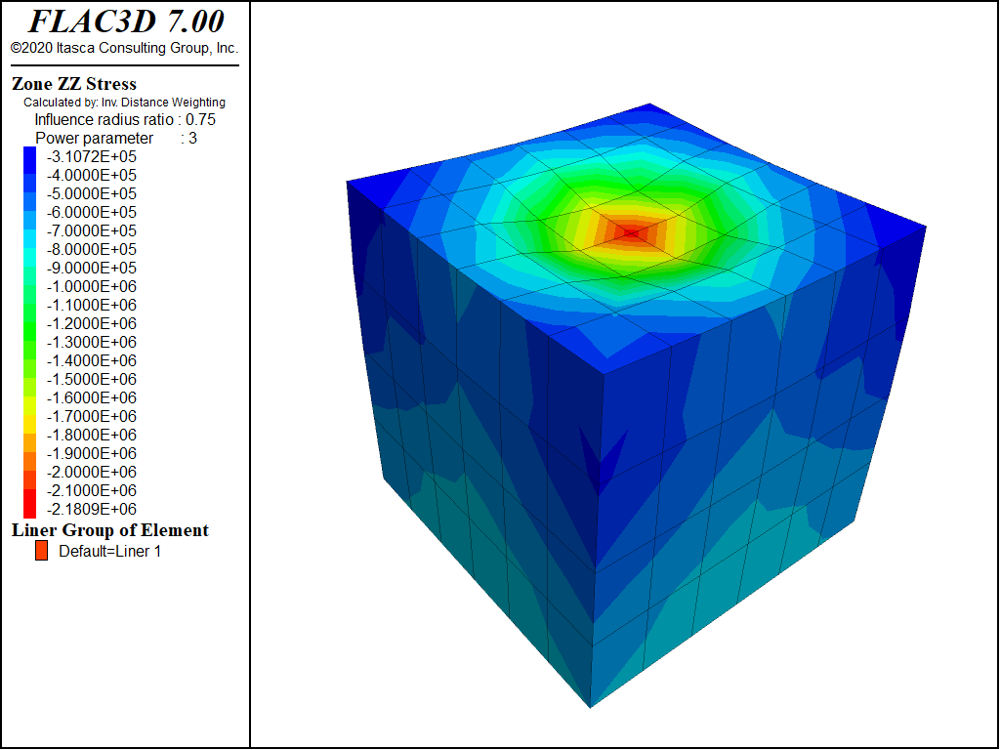
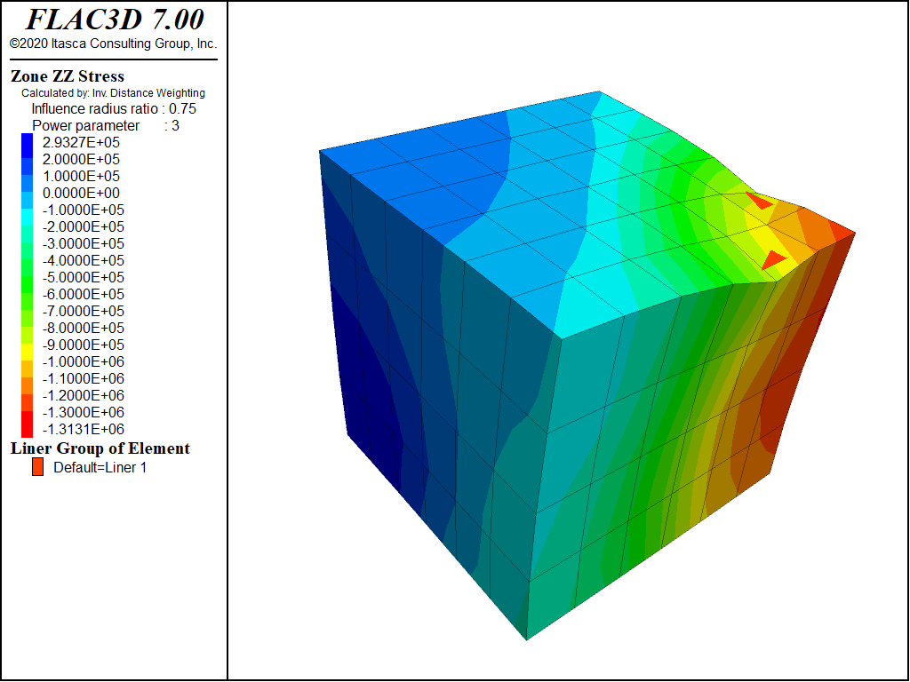
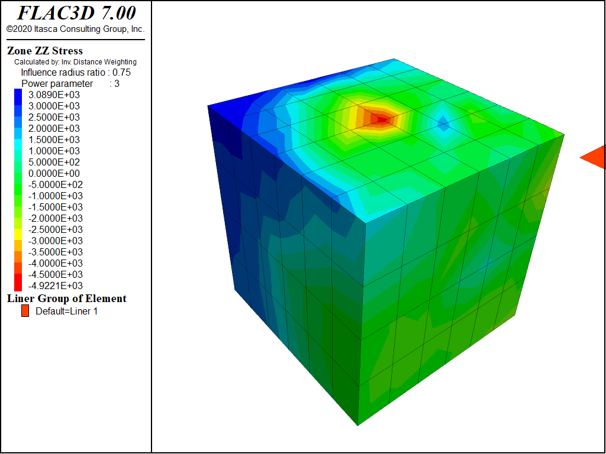
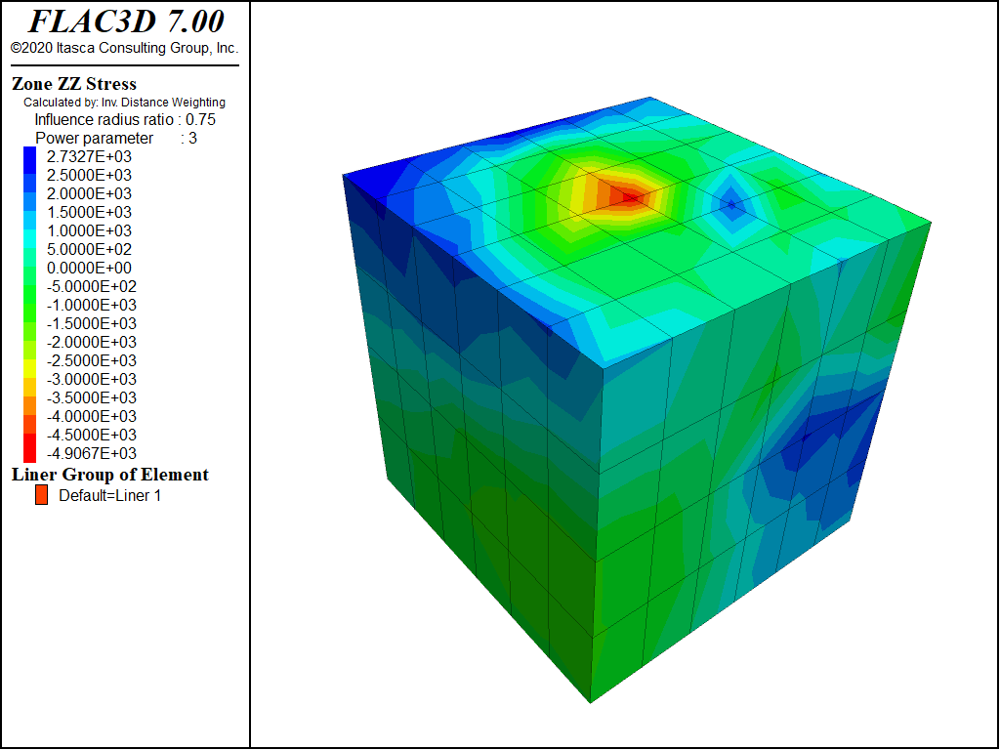

大应变滑移演示
问题描述
注意
本例的项目文件可在 FLAC3D 中查看/运行。[1] 所用 主数据文件（main data files） 示于本例末尾。其余数据文件可在该项目中找到。
将面积为 0.33 m2 的衬砌放置在 1 立方米土块顶部，向下移入土中，然后沿土体表面横向移动。该问题在大应变模式下运行。衬砌先向下移动 10 cm，然后沿对角线横向移动，直至衬砌位于顶面原始角点处。对于衬砌与网格单元之间如此大的相对运动，需要将衬砌的大应变滑动标志设为 开启（on）。（衬砌通过节点-网格单元链接与网格相互作用。这些链接存储网格单元以及该单元内的插值位置，以便在节点与网格单元之间传递力和速度。默认情况下，即使在大应变模式下运行，这些插值位置也不会改变。通过将大应变滑动标志设为 设置衬砌单元滑动属性命令（structure liner property slide） 开启（on），可以允许插值位置在网格中迁移。）
FLAC3D 模型是 1 立方米的土块，由 144 个网格单元组成，土块顶部中央有面积为 0.33 m2、由 8 个衬砌单元组成的混凝土衬砌，如图 1（Figure 1） 所示。土体被指定弹性性质（\(E\) = 15 MPa，\(\nu\) = 0.3）。衬砌材料被指定与厚 0.1 m 的混凝土衬砌相对应的性质（\(E\) = 25 GPa，\(\nu\) = 0.15，\(t\) = 0.1 m），并指定以下衬砌-网格单元界面性质：
| 接触面法向刚度（interface normal stiffness）（\(k_n\)） | 8 × 108 N/m3 |
| 接触面剪切刚度（interface shear stiffness）（\(k_s\)） | 8 × 108 N/m3 |
| 抗拉强度（\(f_t\)） | 0 MPa |
| 黏聚力（\(c\)） | 0 MPa |
| 残余黏聚力（\(c_r\)） | 0 MPa |
| 摩擦角（\(\phi\)） | 0 degrees |


图 1：大应变滑动演示的 FLAC3D 模型。
首先，通过从数据文件中删除 设置衬砌单元滑动属性命令（structure liner property slide） 命令，在关闭大应变滑动的情况下运行该问题。施加前 10 cm 向下位移后网格单元中的 \(zz\) 应力如图 2（Figure 2） 所示。在此阶段，由于衬砌节点与网格单元之间尚未发生大的相对运动，响应是合理的。然而，在沿对角线移动衬砌后，我们在图 3（Figure 3） 中看到 \(zz\) 应力和网格单元变形场不再与衬砌位置相对应。这是不正确的。插值位置没有从原始位置移动；因此，网格仍然感受到作用在块体中心的压缩力。
当开启大应变滑移重新运行该问题时，行为是正确的（见 图 4（Figure 4） 和 图 5（Figure 5））。\(zz\) 向应力与网格单元变形场均与衬砌位置一致，因为插值位置已随网格迁移而跟随衬砌运动。事实上，甚至可以将衬砌完全移出网格，如 图 6（Figure 6） 所示。若衬砌节点随后重新与任何网格单元面接触，相应连接将会重新建立（见 图 7（Figure 7））。



图 3：土体中的竖向应力（大应变滑移关闭；剪切位移 47.6 cm）。


图 4：土体中的竖向应力（大应变滑移开启；法向位移 10 cm）。


图 5：土体中的竖向应力（大应变滑移开启；剪切位移 47.6 cm）。


图 6：土体中的竖向应力（大应变滑移开启；剪切位移 105 cm）。


图 7：土体中的竖向应力（大应变滑移开启；剪切位移 -453 cm）。
数据文件
LargeStrainSliding.dat
; 衬砌结构单元应用算例
; 衬砌大应变滑动演示
model new
fish automatic-create off
model title 'Demonstration of Large-Strain Sliding for a Liner'
; 创建土体。
zone create brick size (6,6,4) point 0 (0,0,0) point 1 (1,0,0) ...
point 2 (0,1,0) point 3 (0,0,1)
zone cmodel assign elastic
zone prop bulk=12.5e6 shear=5.77e6 ; 土体
zone face apply velocity-normal 0 range position-z 0
; 创建混凝土衬砌。
struct liner create by-zone-face range position (0.33,0.33,1) (0.66,0.66,1)
struct liner property isotropic=(25e9,0.15) thickness=0.1 ; 混凝土
struct liner property coupling-stiffness-normal=8e8 ...
coupling-stiffness-shear=8e8 coupling-yield-normal=0.0 ...
coupling-cohesion-shear=0.0 ...
coupling-cohesion-shear-residual=0.0 coupling-friction-shear=0.0
struct node fix velocity ; 完全固定所有节点
struct mechanical damping combined-local
model large-strain on
zone history name='szz' stress-zz position (0.5,0.5,1)
model save 'slide0'
; 施加衬砌位移，并关闭衬砌大应变滑动
struct node initialize velocity (0,0,-1e-4) local ; 法向位移 = -10 cm
model cycle 1000 ; 剪切位移 = 0
model save 'slide1-off'
struct node initialize velocity (3.3e-4,-3.3e-4,0.0) local ; 法向位移 = 0
model cycle 1000 ; 剪切位移 = +476 cm
model save 'slide2-off'
model restore 'slide0'
; 启用衬砌大应变滑动
struct liner property slide on
; 施加衬砌位移
struct node initialize velocity (0,0,-1e-4) local ; 法向位移 = -10 cm
model cycle 1000 ; 剪切位移 = 0
model save 'slide1'
struct node initialize velocity (3.3e-4,-3.3e-4,0.0) local ; 法向位移 = 0
model cycle 1000 ; 剪切位移 = +476 cm
model save 'slide2'
model cycle 1200 ; 剪切位移 = +571 cm
model save 'slide3'
struct node initialize velocity (0,0,1e-3) local ; 法向位移 = +12 cm
model cycle 120 ; 剪切位移 = 0
struct node initialize velocity (-3.3e-3,3.3e-3,0.0) ; 法向位移 = 0
model cycle 315 ; 剪切位移 = -1500 cm
struct node initialize velocity (0,0,-1e-4) local ; 法向位移 = -12 cm
model cycle 1200 ; 剪切位移 = 0
model save 'slide4'
尾注
| [1] | 要在 FLAC3D 中查看该项目，请使用程序菜单。
⮡ FLAC |
⇐ Simple Test of Liner-Zone Interface Behavior | Advancing Lined Tunnel (Slip at Liner-Soil Interface) ⇒
| 这些内容对您有帮助吗？… | FLAC3D © 2019, Itasca | 原文更新于 2020 年 10 月 8 日 |